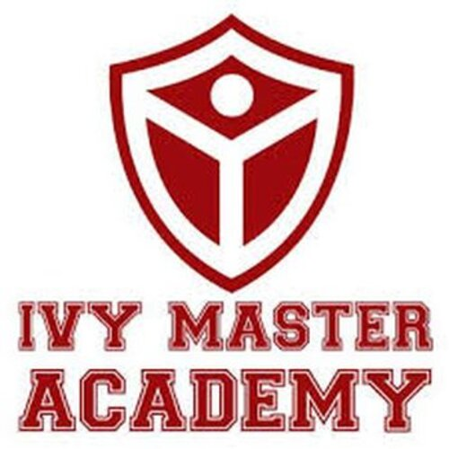
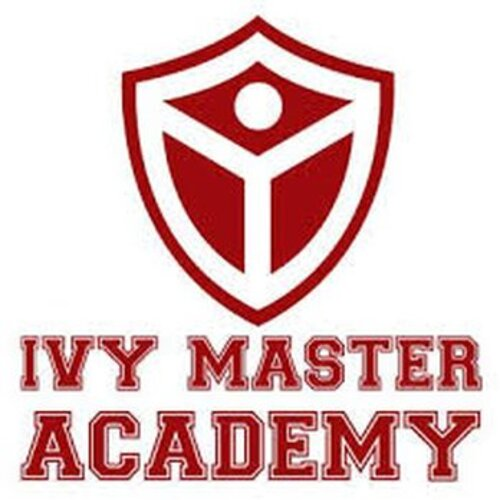

Kenneth Shim
Hello! I am Kenneth Shim, a psychology student at UC Riverside. My passion is studying psychology and being able to apply what I've learned into the workforce to make the world a better place for the people around me.
I am currently 21 years old and a 4th year in college. I plan on graduating soon, and after that applying to graduate school to further my education in psychology.
Though my main passion is psychology, I still plan on exploring other interests and hobbies that I love. Some of these include music, gaming, computer science, tabletop card games, and creative writing. Through these passions, I want to apply my love for psychology to these hobbies and other interests
in order to create a job and environment that I can love doing and being passionate about. I love to learn and explore new things and plan on continuing my interests alongside studying psychology. I've always had interest in music, both in performance and in appreciation and is something that I believe
can be impactful to a person's life in a positive way. Gaming and tabletop card games have always been a hobby of mine that I enjoyed as a kid and believe can be benefitial to enjoy for all ages. Computer science and creative writing have always been subjects throughout school that I've enjoyed a lot and
would have done if it wasn't for psychology, and feel that it is helpful for me going on in the future to not only know about but also have some background and experience in, as well as enjoy.
Throughout my career, I have taken on multiple roles in tutoring, ranging from kids in the 2nd grade up to the 10th grade. Along with tutoring jobs, I have also helped in the food service industry, as well as worked for an academy business in business administration and other tutoring experiences. Among these,
I am confident in the work that I do, and can apply what I've learned in school as well as in the workforce to the task given to me. I plan on doing more work in the education field as well as possibly going back into business administration to not only increase my experience in those jobs, but also to
hone my skills and knowledge as well as experience with people of all age cohorts and needs to help my future career into the psychology field.
Experience
Tutor
• Tutor for elementary students to high school students
• Ran both private tutors and large scale classes
• Experience with English, Math, History, and Science
Business Admin and Teacher
• Helped with front desk office work
• Tutor for elementary school reading courses
• Created class curriculum to use throughout the school year
Food Service
• Created poke bowls
• Learned how to be a server and front register in the food industry
Education
University of California Riverside
Portfolio




